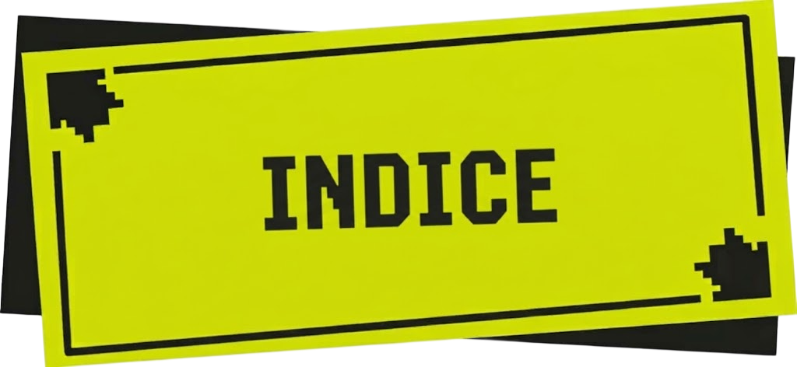
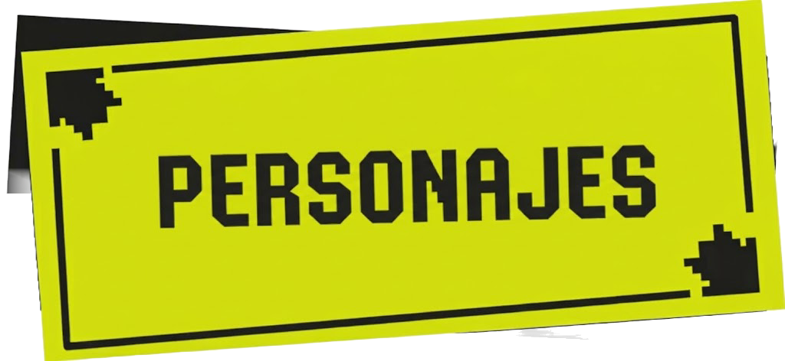
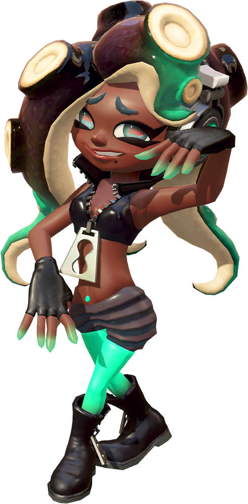
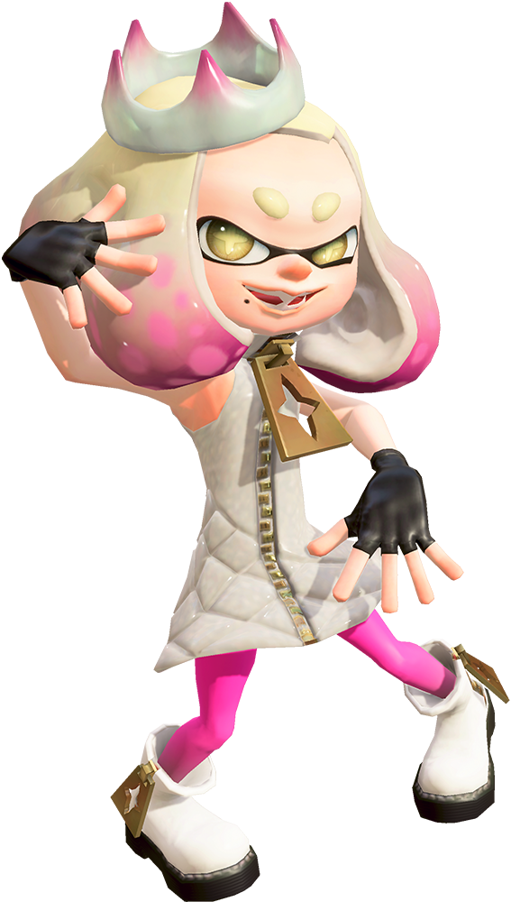
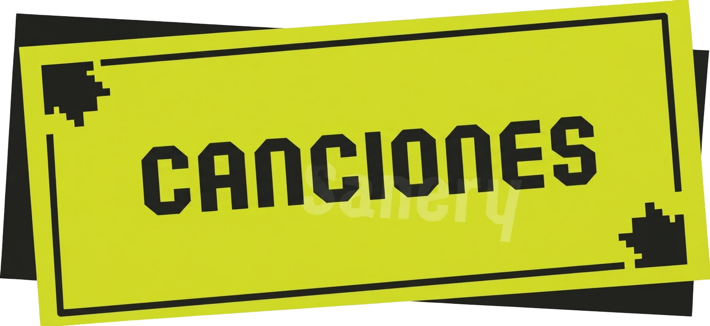

~Splatoon 2 ~Off The Hook~

Off the Hook (conocidas en español como Cefalopop) no es solo un dúo musical; es el fenómeno cultural definitivo que redefinió el sonido de Cromópolis y revolucionó la escena del pop urbano a nivel mundial. Con una química explosiva que fusiona el rap underground más puro con el electropop de vanguardia, este dúo compuesto por la indomable inkling Pearl (Perla) y la brillante octoling Marina ha roto todas las barreras de la industria musical, consolidándose como verdaderas leyendas vivas de la cultura cefalópoda.
~Los Orígenes: El choque de dos mundos~
Para entender la magnitud de su éxito, hay que entender de dónde vienen. Pearl, nacida en una cuna de oro pero con un alma rebelde e incorregible, comenzó su carrera en la escena del death metal. Su voz, capaz de alcanzar decibelios destructivos (literalmente capaces de demoler estructuras), no encontraba su lugar hasta que conoció a Marina. Marina, por su parte, traía consigo un trasfondo misterioso y una genialidad técnica sin precedentes en el diseño de sintetizadores y producción musical.
Cuando estas dos fuerzas de la naturaleza colisionaron, no solo crearon música: inventaron un nuevo estilo de vida. El contraste visual y sonoro —la actitud descarada, ruda y diminuta de Pearl frente a la elegancia tecnológica, la timidez magnética y la calidez vocal de Marina— se convirtió instantáneamente en su sello de identidad.
~El Sonido: Energía pura en el escenario~
Ver a Off the Hook en vivo es una experiencia que te tiñe el alma. Sus conciertos no son simples espectáculos; son batallas de rap de alta intensidad combinadas con raves futuristas.
- La dinámica: Marina lanza bases con ritmos hiperactivos que mezclan el glitch-hop, el future bass y un pop sintetizado increíblemente adictivo. Sobre esa pared de sonido, Pearl entra como un huracán, escupiendo rimas veloces con una actitud callejera que electrifica a las masas.
- El mensaje: Sus letras celebran la libertad, la autoexpresión y, por supuesto, la adrenalina de los combates territoriales.
Temas icónicos como "Color Pulse" o "Ebb & Flow" se convirtieron en los himnos oficiales de toda una generación, sonando en cada rincón de la plaza y motivando a miles de jóvenes a darlo todo en la arena.
~El Impacto Cultural: ¡No os andéis con miramientos!~
Más allá de las listas de éxitos, Off the Hook se apoderó de los corazones de Cromópolis como las presentadoras oficiales del festival más importante de nuestra era: el Splatfest. Con su ya legendario lema de despedida, "Don't get cooked... Stay off the hook!" ("¡No os andéis con miramientos, y seguid muy atentos!"), el dúo demostró que tenía el carisma necesario para unir a las masas, dictando las tendencias de moda, opinión y música durante años.
Su consagración definitiva llegó durante el histórico concierto en el Clam Blitz, donde su música sirvió de puente cultural y emocional, demostrando que el arte tiene el poder de sanar viejas rivalidades y unir a diferentes especies bajo un mismo compás hiperactivo. Off the Hook no sigue las tendencias musicales: las crea, las destruye y las vuelve a pintar con los colores más brillantes del panorama actual.


~MARINA IDA~


Marina Ida es uno de los personajes más icónicos de Splatoon, conocida por ser la brillante mente musical del dúo Off the Hook (Cefalopop) junto a su inseparable compañera Pearl (Perla). Como una talentosa Octoling, ha logrado conquistar la superficie gracias a su inmenso amor por la música y el arte.
Su diseño destaca por sus icónicos tentáculos marrón oscuro con puntas verde azulado brillante (teal) y un estilo urbano hip-hop impecable. Aunque en público suele mostrarse reservada, modesta y muy dulce, detrás de los escenarios es una auténtica genio de la ingeniería y la informática, diseñando desde complejos escenarios para los Splatfests hasta entornos virtuales avanzados.
Dentro del grupo, Marina toma el rol de productora y DJ. Mientras Pearl desata rimas veloces, ella se encarga de crear las suaves melodías vocales y los ritmos electrónicos digitales con su teclado y tornamesa, componiendo los grandes himnos que unen a toda la ciudad.
¡Atención, habitantes de Inkopolis! ¡Preparen sus tentáculos porque la escena musical está a punto de estallar con un ritmo totalmente nuevo!
Desde lo más profundo del circuito underground llega el dúo que va a revolucionar las noticias de la plaza y los escenarios del Splatfest. Hoy tenemos el honor de presentarles a la mitad más dulce, talentosa y cerebral de Off the Hook: ¡recibamos con un fuerte aplauso a la inigualable Marina!
Marina no es una artista común y corriente; es una verdadera fuerza de la naturaleza musical. Con su estilo urbano impecable, sus auriculares siempre listos y una sonrisa que ilumina toda la pantalla, ha llegado para adueñarse de los corazones de toda la ciudad. Pero no se dejen engañar por su timidez, porque cuando se para frente a las consolas, ¡se transforma por completo!
Ella es la mente maestra detrás de los ritmos digitales de la banda y la voz melódica que equilibra a la perfección el rap de Pearl. Aunque a veces se muestre un poco tímida en el escenario, su genialidad musical habla por sí sola. ¿Están listos para escuchar el sonido del futuro? ¡Manténganse sintonizados y no le quiten el ojo de encima a Marina y a Off the Hook!
~PERLA HOUZUKI~


No se dejen engañar por su estatura, porque Perla tiene el tamaño de un calamar promedio pero la potencia de un Kraken en pleno ataque. Ella es pura dinamita, actitud rebelde y estilo sin filtros. Junto a su compañera Marina, viene a demostrar que el pop tradicional quedó en el pasado y que Off the Hook llegó para imponer sus propias reglas.
¿Quieren saber por qué Pearl va a ser tu nueva obsesión en la música? ¡Aquí tienen las pruebas!
• Rimas Explosivas a la Velocidad de la Luz: Perla es una MC con un talento natural para el rap. Sus versos son rápidos, agresivos y llenos de una confianza arrolladora que te pondrá a saltar desde la primera nota.
• La Voz Más Potente de la Ciudad: Dicen los rumores en el estudio que cuando Perla grita al micrófono sin modulador, ¡puede hacer vibrar las ventanas de toda Inkopolis! Su potencia vocal es simplemente de otra galaxia.
• Estilo Urbano y Realeza Callejera: Con su icónica corona dorada, su vestido blanco con detalles rosa brillante y esa mirada desafiante, Perla no sigue las tendencias... ¡las crea! Su estilo grita lujo, rebeldía y mucha personalidad.
Aunque a veces parezca un poco ruda o presuma demasiado, Perla tiene un corazón enorme y una lealtad absoluta hacia su música y sus fans. ¡Ella no viene a pedir permiso, viene a reclamar el trono de Inkopolis!

¡Now or Never!
Now or never es una de las canciones que cantan Marina y Perla especialmente en los Splatfests en los que ellas realizan, cantándola cuando el tiempo de las batallas territoriales está a punto de llegar a su fin. La cantan al faltar 1 minuto restante para concluir la batalla y dar paso a los resultados. ¡Esta canción es un cover de la famosísima versión de Now or Never de Squid Squad de Splatoon 1!
Shark Bytes
Shark Bytes (conocida en español como Aletazos) es una de las canciones más intensas y destacadas del DLC Splatoon 2: Octo Expansion. Suena como tema de fondo durante las desafiantes batallas contra los jefes finales en el Tramo Maestro. Interpretada por Off the Hook, la pista fusiona un estilo drum and bass frenético con el rap rápido de Pearl y los coros sintetizados de Marina.
Nasty Majesty
Nasty Majesty es una de las canciones más icónicas de Cefalopop y el tema principal de la Octo Expansión. Musicalmente destaca por combinar un ritmo electrónico oscuro y misterioso a cargo de Marina con el rap agresivo de Perla, marcando el choque cultural entre la superficie y el mundo subterráneo de los Octarianos.
Fly Octo Fly
Fly Octo Fly es el tema musical más épico de Off the Hook y suena durante la batalla final de la Octo Expansión. Es un pop electrónico frenético que representa la libertad y el deseo de los Octolings de salir a la superficie, fusionándose de manera magistral con "Ebb & Flow" en el clímax del combate.
Into the Light
"Into the Light" ("Hacia la luz") es el tema de cierre que suena durante los créditos finales de la Octo Expansión. Ofrece un pop electrónico mucho más relajado, melancólico y reconfortante que simboliza la libertad y el nuevo comienzo del Agente 8 bajo el sol de Inkopolis.
~Ebb & Flow~
"Ebb & Flow" alude al flujo y reflujo constante de la marea, sirviendo como la metáfora perfecta para el combate territorial de los Splatfests. Representa la unión inquebrantable entre Perla y Marina, siendo la primera canción que compuso Marina tras llegar a la superficie.
La historia de Off the Hook (Cefalopop) comenzó a gestarse un par de años antes de los acontecimientos ocurridos en la plaza de Cromópolis.
~El encuentro en el Monte Molusco~
Todo dio inicio en los terrenos desolados del Monte Molusco (Mount Nantai) donde una impulsiva y adinerada Inkling llamada Perla pasaba los días practicando sus demoledores y caóticos gritos vocales. En ese mismo lugar apareció de la nada Marina, una joven Octoling ingeniera militar que acababa de desertar del ejército octariano tras quedar maravillada escuchando la mítica melodía de las Calamarciñas. Aunque no hablaban el mismo idioma, la música funcionó como su lenguaje universal.
~La edad del primer contacto~
Al momento de cruzarse en la montaña, Perla tenía 19 años mientras que Marina tenía apenas 16 años, desmitificando la creencia popular de que la alta Octoling era la mayor. Durante dos semanas, Marina regresó al Monte Molusco todos los días seguidos con la esperanza de volver a encontrarse con esa extraña chica de voz destructiva.
~La unión musical~

Cuando finalmente se reencontraron, Marina le mostró a Perla una maqueta musical electrónica que terminaría convirtiéndose en "Ebb & Flow". Perla quedó tan impactada que aceptó formar el dúo inmediatamente. Su debut bajo el nombre de Off the Hook catapultó al grupo al estrellato masivo en Inkopolis.
~Cómo funcionó su amistad~
La clave de su éxito radicó en la complementación perfecta de sus personalidades opuestas: la actitud rebelde e impulsiva de Perla encontró un balance absoluto con la naturaleza reservada, inteligente y analítica de Marina, creando un lazo de lealtad inquebrantable.
~Historia de Marina~
La historia de Marina Villaoctos es una de las más profundas de Splatoon. Destacó en la sociedad militar octariana graduándose con solo 9 años en la academia de élite. A los 16 años, tras escuchar la transmisión de la "Calamari Inkantation" durante el combate final de Splatoon 1, desertó del ejército en busca de libertad.
Años más tarde, durante la Octo Expansión, Marina se reencontró con su vieja amiga Acht en el Ordenland digital, logrando liberarla y sanar los remordimientos del pasado. El clímax absoluto de la carrera de Marina quedó guardado en el archivo que conserva con inmenso cariño: el demo original de "Ebb & Flow".

~Historia de Perla~
Perla Houzuki nació en una familia millonaria de Inkopolis. A pesar de tener la vida resuelta, quería ganarse un lugar en la música por su propia cuenta. Nació con unas cuerdas vocales superdesarrolladas que provocaron una onda destructiva durante un concurso infantil.
Canalizó su potente voz hacia el death metal solista lanzando su infame tema "#$@%* Dudes Be #$@%* Sleepin'", el cual fue censurado por las radios. Poco después se retiró al Monte Molusco para practicar sus gritos, lugar donde conoció a Marina, quien logró transformar esa agresividad en el icónico rap de Off the Hook.